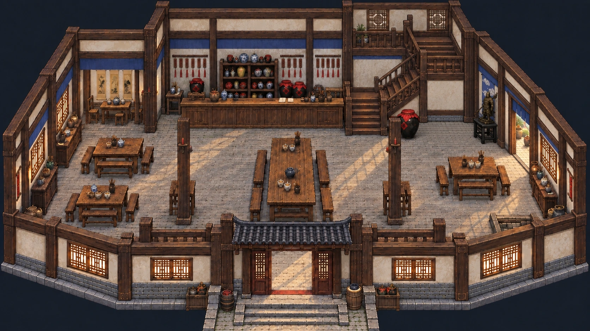

同福
同福客栈
《武林外传》线上博物馆
逛客栈
人物志
故事志
客官，里面请。
点一位老朋友，或翻翻大堂里的往事。
☀
☾
七侠镇 · 白天
大堂

正在打开客栈门…
同福客栈
壹 · 大堂
点人物看故事，沿门口去别处。
显示热点
随便逛逛
人物
场景
物件
故事
全部热点
看近些
空间示意
点点人物，或从右墙的门去后院看看。
看近些后，可左右滑动地图。
返回上一页
同福客栈 · 馆藏手记
关闭
×